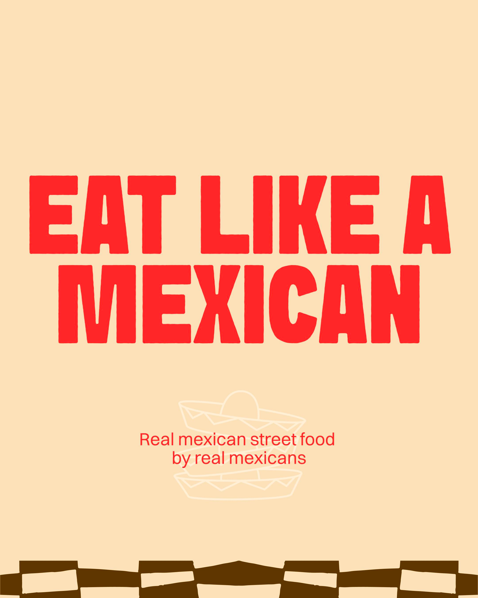

Beef tacos
Zachte tortillas, pulled beef en frisse toppings.
Burritos, tacos, quesadillas, bowls and loaded sides from four Amsterdam locations. Simple to browse, fast to order.
Zachte tortillas, pulled beef en frisse toppings.
Een korte blik op de energie achter de toonbank.
Casual, vers en snel klaar voor je bestelling.
Korte verticale beelden die rustig laten zien wat je kunt verwachten: warme tacos, snelle service en een herkenbare Tres Amigos sfeer.

A clear location overview with every correct order link per shop. No searching, no wrong platform, just pick the closest Tres Amigos.
The site uses mostly white space, food photography and simple cards. The brand colours appear as small accents, light blue panels, labels and one moving strip, not as full-page poster styling.
Read the story
A modern fast casual website with the Tres Amigos identity in the right dose: recognisable, but still sharp, clean and easy to use.